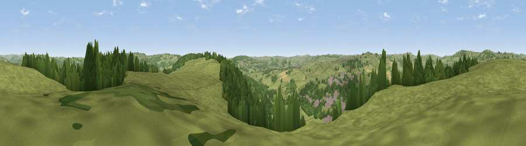

Viewpoint near Bakewell
#21544 in England · top 33% of its area beats it · near BakewellThe view, rendered

A 360° render of this exact spot computed from the terrain model, tree cover and land cover — summer colours, afternoon light, calibrated against photographs of famous viewpoints. Real trees, hedges and buildings will differ in detail.
The panorama
Grey silhouette: terrain skyline in each direction (720 bearings, Earth curvature and refraction included). Dashed green: skyline with trees (+15 m) and buildings (+8 m) as obstacles. Blue strip: how far the ground is visible on each bearing.
Where the view opens
Wedge length = distance to the farthest visible ground on that bearing (vegetation-aware). Rings at 10, 25 and 50 km.
What fills the view
71% grassland · 24% woodland · 3% built-up · 2% cropland
Angular shares of the visible panorama (visual magnitude), not map area. Landscape diversity 0.33 (0–1 Shannon).
Key numbers
More beautiful places nearby
The staircase of upgrades: each row has a higher view potential than everything closer. Driving times are estimates from straight-line distance, calibrated against real road routing — check an actual route before setting out.
| Place | Direction | Drive | Score |
|---|---|---|---|
| Viewpoint near Edensor | SE · 1 km | ~3 min | 56.1 |
| Viewpoint near Hassop | N · 4 km | ~10 min | 57.1 |
| High Rake | NNW · 5 km | ~11 min | 71.1 |
| Crich Stand | SE · 18 km | ~31 min | 73.0 |
| Tissington Hill | SSW · 18 km | ~31 min | 75.5 |
| Wild Bank | NW · 38 km | ~56 min | 76.2 |
| Viewpoint near Mow Cop | WSW · 39 km | ~58 min | 78.9 |
| Viewpoint near Mow Cop | WSW · 39 km | ~58 min | 80.2 |
53.21868, -1.65663 · source: screening · position refined by local search. Computed location — check access rights before visiting.